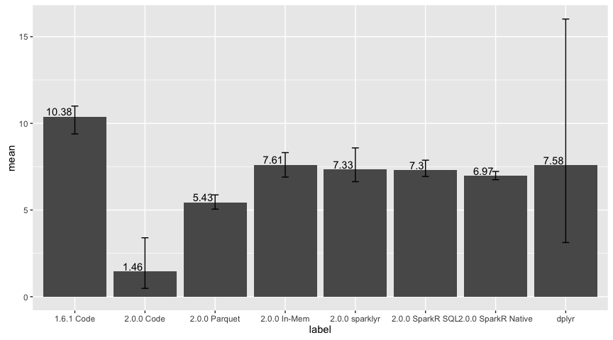

Spark Performance: 1B Rows
Setup
sparklyr:::spark_install(version = "2.0.0-preview", reset = TRUE, logging = "WARN")
Initialization
library(sparklyr)
library(dplyr)
##
## Attaching package: 'dplyr'
## The following objects are masked from 'package:stats':
##
## filter, lag
## The following objects are masked from 'package:base':
##
## intersect, setdiff, setequal, union
library(ggplot2)
parquetName <- "billion.parquet"
parquetPath <- file.path(getwd(), parquetName)
if (dir.exists(parquetPath)) {
unlink(parquetPath, recursive = TRUE)
}
config <- spark_config()
config[["sparklyr.shell.driver-memory"]] <- "12G"
config[["sparklyr.shell.executor-memory"]] <- "12G"
config[["spark.executor.memory"]] <- "12G"
sc <- spark_connect(master = "local", config = config)
billion <- invoke_new(sc, "java.math.BigInteger", "1000000000") %>%
invoke("longValue")
hive_context(sc) %>%
invoke("range", as.integer(billion)) %>%
invoke("toDF") %>%
invoke("write") %>%
invoke("save", parquetName)
## NULL
spark_disconnect(sc)
spark_conf <- function(ses, config, value) {
ses %>%
invoke("conf") %>%
invoke("set", config, value)
}
logResults <- function(label, test) {
runTimes <- lapply(seq_len(3), function(idx) {
runTime <- system.time({
sum <- test()
})
as.data.frame(list(
label = label,
time = runTime[[3]],
sum = sum))
})
runTimes <- do.call(rbind, runTimes)
as.data.frame(list(
label = label,
min = min(runTimes$time),
max = max(runTimes$time),
mean = mean(runTimes$time)
))
}
sparkTest <- function(test, loadIntoDf = TRUE, loadData = TRUE) {
sc <- spark_connect(master = "local",
version = "2.0.0-preview",
config = config)
ses <- hive_context(sc)
df <- NULL
if (loadData) {
if (loadIntoDf) {
df <- ses %>%
invoke("read") %>%
invoke("parquet", list(parquetPath)) %>%
invoke("repartition", as.integer(parallel::detectCores()))
df %>%
invoke("cache") %>%
invoke("count")
} else {
invisible(
spark_read_parquet(sc, "billion", parquetPath, repartition = parallel::detectCores())
)
}
}
result <- test(sc, ses, df)
spark_disconnect(sc)
result
}
Tests
Sum range from formula
spark_sum_range <- function(sc, ses, df) {
billion <- invoke_new(sc, "java.math.BigInteger", "1000000000") %>%
invoke("longValue")
result <- ses %>%
invoke("range", as.integer(billion)) %>%
invoke("toDF", list("x")) %>%
invoke("selectExpr", list("sum(x)"))
invoke(invoke(result, "collect")[[1]], "get", as.integer(0))
}
Sum range from parquet
spark_sum_range_parquet <- function(sc, ses, df) {
df <- invoke(hive_context(sc), "read") %>%
invoke("parquet", list(parquetPath))
result <- invoke(df, "selectExpr", list("sum(id)")) %>%
invoke("collect")
invoke(result[[1]], "get", as.integer(0))
}
Sum range from memory
spark_sum_range_mem <- function(sc, ses, df) {
result <- df %>%
invoke("selectExpr", list("sum(id)")) %>%
invoke("collect")
invoke(result[[1]], "get", as.integer(0))
}
Sum range using sparklyr
spark_sum_range_sparklyr <- function(sc, ses, df) {
tbl(sc, "billion") %>%
summarise(total = sum(id)) %>%
collect
}
Sum range using SparkR SQL
spark_sum_range_sparkr_sql_prepare <- function() {
installInfo <- sparklyr:::spark_install_info(sparkVersion = "2.0.0-preview", hadoopVersion = "2.6")
Sys.setenv(SPARK_HOME = installInfo$sparkVersionDir)
library(SparkR, lib.loc = c(file.path(Sys.getenv("SPARK_HOME"), "R", "lib")))
scR <- sparkR.init(master = "local[*]", sparkEnvir = list(spark.driver.memory="12G"))
sqlContextR <- sparkRSQL.init(scR)
df <- loadDF(sqlContextR, parquetPath, "parquet")
df <- repartition(df, parallel::detectCores())
registerTempTable(df, "billion")
sql(sqlContextR, "CACHE TABLE billion")
collect(sql(sqlContextR, "SELECT count(*) FROM billion"))
sqlContextR
}
spark_sum_range_sparkr_sql <- function(sqlContextR) {
collect(sql(sqlContextR, "SELECT sum(*) FROM billion"))
}
spark_sum_range_sparkr_terminate <- function() {
sparkR.stop()
detach(name = "package:SparkR")
}
Sum range using SparkR Native
spark_sum_range_sparkr_native_prepare <- function() {
installInfo <- sparklyr:::spark_install_info(sparkVersion = "2.0.0-preview", hadoopVersion = "2.6")
Sys.setenv(SPARK_HOME = installInfo$sparkVersionDir)
library(SparkR, lib.loc = c(file.path(Sys.getenv("SPARK_HOME"), "R", "lib")))
scR <- sparkR.init(master = "local[*]", sparkEnvir = list(spark.driver.memory="12G"))
sqlContextR <- sparkRSQL.init(scR)
df <- loadDF(sqlContextR, parquetPath, "parquet")
df <- repartition(df, parallel::detectCores())
cache(df)
count(df)
df
}
spark_sum_range_sparkr_native <- function(df) {
collect(summarize(df, total = sum(df$id)))
}
Sum range using dplyr
spark_sum_range_dplyr_prepare <- function() {
df <- as.data.frame(as.numeric(seq_len(1000000000)))
colnames(df) <- c("x")
head(df)
df
}
spark_sum_range_dplyr <- function(df) {
df %>% summarise(sum(x))
}
Results
Sum range from formula using 1.6
runOldCode <- sparkTest(function(sc, ses, df) {
logResults("1.6.1 Code", function() {
spark_conf(ses, "spark.sql.codegen.wholeStage", "false")
spark_sum_range(sc, ses, df)
})
}, loadData = FALSE)
Sum range from formula using 2.0
runCode <- sparkTest(function(sc, ses, df) {
logResults("2.0.0 Code", function() {
spark_conf(ses, "spark.sql.codegen.wholeStage", "true")
spark_sum_range(sc, ses, df)
})
}, loadData = FALSE)
Sum range from parquet
runParquet <- sparkTest(function(sc, ses, df) {
logResults("2.0.0 Parquet", function() {
spark_conf(ses, "spark.sql.codegen.wholeStage", "true")
sum <- spark_sum_range_parquet(sc, ses, df)
})
})
Sum range from memory
runInMem <- sparkTest(function(sc, ses, df) {
logResults("2.0.0 In-Mem", function() {
spark_conf(ses, "spark.sql.codegen.wholeStage", "true")
sum <- spark_sum_range_mem(sc, ses, df)
})
})
Sum range using sparklyr
runSparklyr <- sparkTest(function(sc, ses, df) {
logResults("2.0.0 sparklyr", function() {
spark_conf(ses, "spark.sql.codegen.wholeStage", "true")
sum <- spark_sum_range_sparklyr(sc, ses, df)
})
}, loadIntoDf = FALSE)
Sum range using SparkR SQL
sqlContextR <- spark_sum_range_sparkr_sql_prepare()
##
## Attaching package: 'SparkR'
## The following objects are masked from 'package:dplyr':
##
## arrange, between, collect, contains, count, cume_dist,
## dense_rank, desc, distinct, explain, filter, first, group_by,
## intersect, lag, last, lead, mutate, n, n_distinct, ntile,
## percent_rank, rename, row_number, sample_frac, select, sql,
## summarize
## The following objects are masked from 'package:stats':
##
## cov, filter, lag, na.omit, predict, sd, var, window
## The following objects are masked from 'package:base':
##
## as.data.frame, colnames, colnames<-, drop, endsWith,
## intersect, rank, rbind, sample, startsWith, subset, summary,
## transform
## Launching java with spark-submit command /Users/javierluraschi/Library/Caches/spark/spark-2.0.0-preview-bin-hadoop2.6/bin/spark-submit --driver-memory "12G" sparkr-shell /var/folders/fz/v6wfsg2x1fb1rw4f6r0x4jwm0000gn/T//RtmpcEA7DC/backend_port6ce43c5fb478
runSparkRSQL <- logResults("2.0.0 SparkR SQL", function() {
sum <- spark_sum_range_sparkr_sql(sqlContextR)
})
spark_sum_range_sparkr_terminate()
Sum range using SparkR native
dfSparkR <- spark_sum_range_sparkr_native_prepare()
##
## Attaching package: 'SparkR'
## The following objects are masked from 'package:dplyr':
##
## arrange, between, collect, contains, count, cume_dist,
## dense_rank, desc, distinct, explain, filter, first, group_by,
## intersect, lag, last, lead, mutate, n, n_distinct, ntile,
## percent_rank, rename, row_number, sample_frac, select, sql,
## summarize
## The following objects are masked from 'package:stats':
##
## cov, filter, lag, na.omit, predict, sd, var, window
## The following objects are masked from 'package:base':
##
## as.data.frame, colnames, colnames<-, drop, endsWith,
## intersect, rank, rbind, sample, startsWith, subset, summary,
## transform
## Launching java with spark-submit command /Users/javierluraschi/Library/Caches/spark/spark-2.0.0-preview-bin-hadoop2.6/bin/spark-submit --driver-memory "12G" sparkr-shell /var/folders/fz/v6wfsg2x1fb1rw4f6r0x4jwm0000gn/T//RtmpcEA7DC/backend_port6ce4693d1755
runSparkRNative <- logResults("2.0.0 SparkR Native", function() {
sum <- spark_sum_range_sparkr_native(dfSparkR)
})
spark_sum_range_sparkr_terminate()
Sum range using dplyr
dplyrDf <- spark_sum_range_dplyr_prepare()
runDplyr <- logResults("dplyr", function() {
sum <- spark_sum_range_dplyr(dplyrDf)
})
dplyrDf <- NULL
Results
allRuns <- lapply(
list(
runOldCode,
runCode,
runParquet,
runInMem,
runSparklyr,
runSparkRSQL,
runSparkRNative,
runDplyr
),
function(e) {
colnames(e) <- c("label", "min", "max", "mean")
e
})
results <- do.call("rbind", allRuns)
Results chart
results %>%
ggplot(aes(label, mean)) +
geom_bar(stat = "identity") +
geom_text(aes(label = round(mean, 2)), vjust = -0.2, hjust = 1.1) +
geom_errorbar(aes(ymin = min, ymax = max), width = 0.1)

Results table
results
## label min max mean
## 1 1.6.1 Code 9.389 10.998 10.375667
## 2 2.0.0 Code 0.480 3.398 1.459333
## 3 2.0.0 Parquet 5.050 5.875 5.431000
## 4 2.0.0 In-Mem 6.900 8.311 7.611667
## 5 2.0.0 sparklyr 6.633 8.583 7.330000
## 6 2.0.0 SparkR SQL 6.935 7.874 7.300333
## 7 2.0.0 SparkR Native 6.750 7.226 6.973333
## 8 dplyr 3.123 16.016 7.578333